Building a Sleeper Computer from an SGI Indy
Published: September 04, 2022
Tags: PC Building, CAD, Soldering, C, Arduino
I've had my hands on the blue outer shell of a Silicon Graphics Indy for a while. It was originally intended for something that ended up falling apart, so I just left it in storage until I could find a use for it. SGI computers, in general, are something I find quite cool due to their history relating to CGI in cinema, but the Indy is a particular standout for me due to its frequent use in making Nintendo 64 games (I make N64 homebrew, in case you weren't aware!).
2020 came along and I had quite a bit of money saved up, so I thought it was time I finally build a PC. Unfortunately, that was the start of the COVID pandemic, and the subsequent rise in costs for PC hardware worldwide. Bummer.
But I am a patient person. My laptop has served me well for quite a lot of years, and I'm the sort of person who won't let hardware die (If something breaks, I will do what I can to repair it), so I can sit and wait for prices to return to normal. Thankfully, in June of 2022, the Cryto market kamikaze'd, which led to the price of graphics cards to drop significantly. Time to invest!
I then remembered I had that shell lying around, which gave me a really stupid idea... What if I tried building my PC inside it? I certainly can't fit a full desktop in my room, there just isn't space... But the Indy is quite compact!
Setting the Ground Rules
I'm not the first person to make a sleeper computer. The YouTube channel Linus Tech Tips has done it many times already... But in all of these builds, the original case is modified in some way, and as a preservationist that just doesn't jive well for me. So I set myself three ground rules:
- Keep it as close to the original as possible. This means that I can't cheat by have parts sticking out from the sides or hiding from behind where one won't see it normally.
- Absolutely no modification of the shell in any way. I want the shell to be removable and to be put on a real SGI Indy with no mutilations. The original hardware won't be getting any less rare...
- Budget of around 2000€. I originally had about 1500€, but saving up those two years I had about 3000 to splurge.
Also, to make the article clear: Shell/Case = Blue outer plastic. Chassis = Inner metal box.
With the ground rules set, first I had to make sure this stupid idea was even possible.
Initial checks
I whipped out the tape measure and eyeballed the dimensions of the inner box. My measurements were 390mm x 340mm x 70mm. A server rack is usually 44.5mm tall (also known as 1U) or double that (2U). It looked doable, so I drew a box in Google Sketchup. I then looked up different component sizes which would potentially fit in here. The values I settles on were:
- A Flex ATX power supply, 815mm x 15mm x 405mm
- A Mini ITX Motherboard, 170mm x 170mm
- A GPU, I chose the AMD RX 6900XT at random, 267mm x 120mm x 5mm
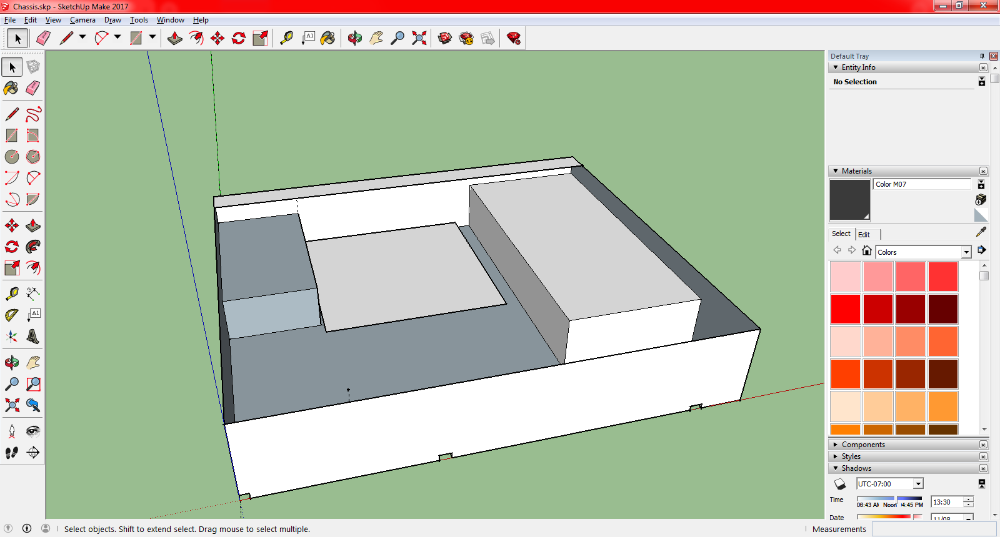
They seem to fit.
They not only fit, but there's quite a bit of space left. I originally thought about water cooling, but after reading measurements online I realized it would be really hard, if not impossible in such a compact space. Two 120mm fans will fit (one for intake, one for exhaust), so regular air cooling it is...
CAD Modeling
Seeing that the build was indeed viable, it was time to move on to modeling the box proper. I started by looking at ProtoCase and their custom case making software, but it was incredibly limited and confusing to use, so I decided instead to grab a copy of FreeCAD and do it myself.
This was my first experience working with both CAD and with sheet metal. FreeCAD does not support the sheet metal workbench by default, I had to install that separately. There's few tutorial videos on YouTube for both FreeCAD and the sheet metal workbench specifically, but they were enough to get me going.
I settled on using 1mm thick aluminum sheet metal. The reason for aluminum is that it's relatively light, and easy to cut/drill into if I have a need to make some modifications. Downside is that aluminum is conductive, so I need to either anodize or paint it, or just ensure that the motherboard does not touch the chassis. Thankfully, you have standoff screws for that exact reason.
A useful trick in CAD is to create a big semi-transparent cube which is the same dimensions as your limit. Like this you can always see if something ends up being too big without having to whip out the awkward to use tape measure tool.
So I modeled a box, and then I went to GrabCAD and downloaded a bunch of models that would be useful. I got the following models:
- A FlexATX PSU.
- A MiniITX Motherboard with Backplate
- An AMD 6900XT GPU
- 6mm Motherboard Standoff
- 120mm Fan
- 120mm Radiator
- 2.5 SATA SSD
I loaded up the models and started placing them around my box to ensure that everything truly still fit:
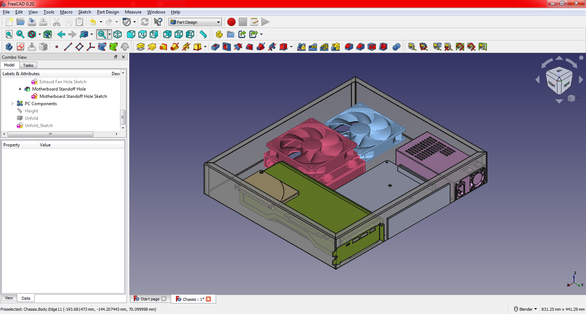
And they do.
Notice how the SSD is placed on top of the GPU. It was either there, or on top of the power supply... Unfortunately the space behind the GPU was just a centimeter too short to fit the SSD, so it will need to go on top of something, if I end up going with one. I intended on having an NVME as well, but I wanted a disk on the side as backup.
All of this, of course, was hinging on the fact that the measurements of the box were actually correct... So I decided to buy some cardboard and make a test box:
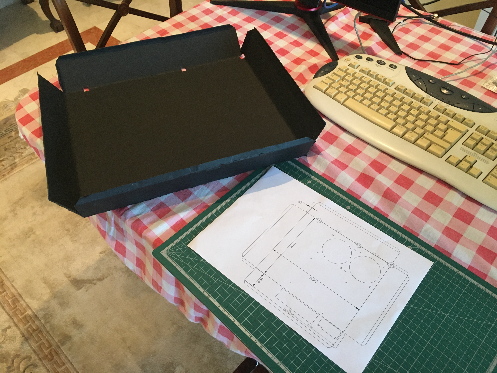
The cardboard box and the paper I printed out with the measurements.
This cardboard box taught me two things: First, the top bend on the left side was too long. The box would end up hitting a plastic tab that sticks out on the top of the case. The second was that the fit was incredibly tight. Just to be extra safe, I decided to shave off 1 milimeter off the side, so the final width would be 389 mm.
{kind=link}
Parts
Feeling comfortable that this build was very much possible, I decided to take the jump and buy the parts. These were what I settled on:
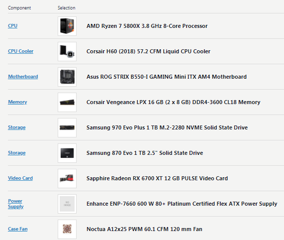
I used PCPartPicker since it lets me select parts available on stores in my country, and will warn me of incompatibilities.
I originally wanted to go with an 6900XT, but I decided to go for a 6700 instead because the 6800 and 6900 from Sapphire (I had settled on a Sapphire card due to warranty + general recommendation) were actually bigger than the GPU model I had. This would make the fit too tight to my liking, so I scaled down the power. You might have also noticed I went with full AMD. I intend on running Linux as my daily driver, so a AMD GPU is usually a better choice due to compatibility. For these sort of compact builds, blower style cards are usually the better option, but unfortunately there aren't any for sale for the 6000 series of graphics cards.
Of course, in order to connect the GPU to the motherboard, I needed a riser card. After measuring with the tape measure, I settled on a 35cm cable from LinkUp. I also threw in a 1080p 144hz monitor by AOC with built in speakers and a USB hub so that I didn't have to reach around to the back of the PC for IO, since I knew I'd be limited in that regard.
Almost everything was bought from Europe, with the exception of the PSU which was sold by OverTek in the UK. Things arrived in a day or two, with the riser and PSU taking the longest.
Having everything here, I decided to build the PC on top of the boxes to ensure all the components worked before I potentially massacred them.
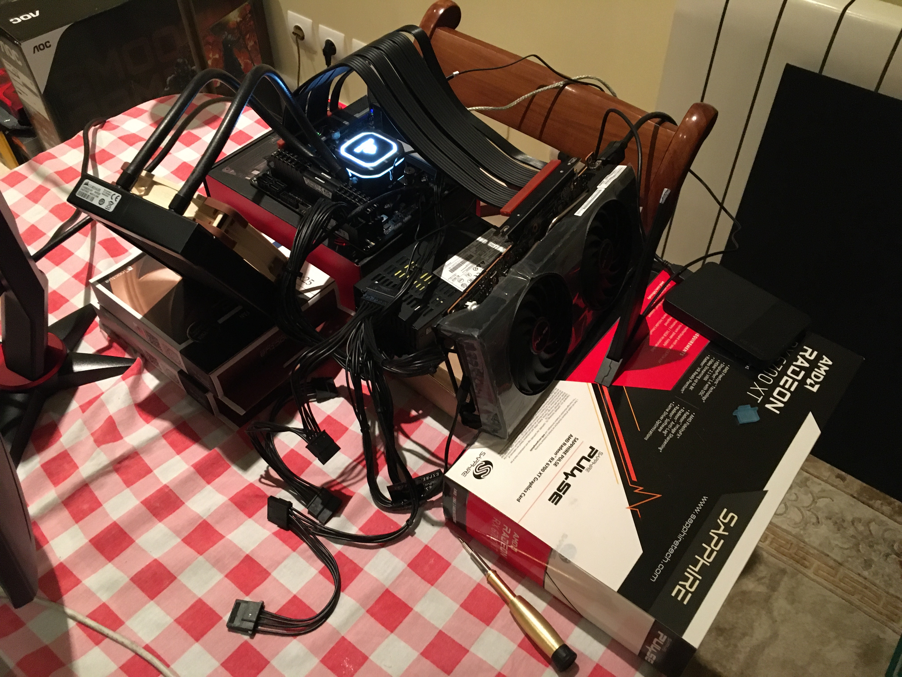
A beautiful mess of a computer.
Turning a computer on without a power button is just a matter of shorting two pins on the motherboard with a screwdriver like so. That's all a power button does, really. It just connects the two pins together when pressed.
Finishing the CAD Model
I have a working computer, now I just need a box to put it in. I kept working on the model, I even made a small model of the riser from measurements to ensure the GPU was correctly offset to the side. I also made a neat discovery: The GPU is actually slightly shorter than what was said online, meaning I could mount the SSD behind it instead of on top of something, hooray!
Some CAD work later, I finished the design of the box:
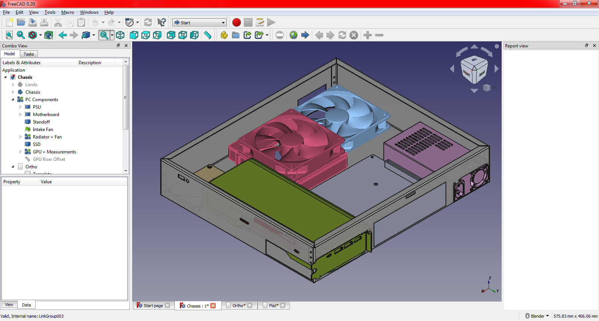
I should use this opportunity to talk about design decisions.
If you look at what an Indy looks like from below, you will notice that the metal completely touches the side wall on one side, but has a gap on the other side and in the front. This lets me have screws and stuff poking out. This was one of the reasons for placing the GPU where I did (the other was that the intake fans could suck from the bottom).
{kind=link}
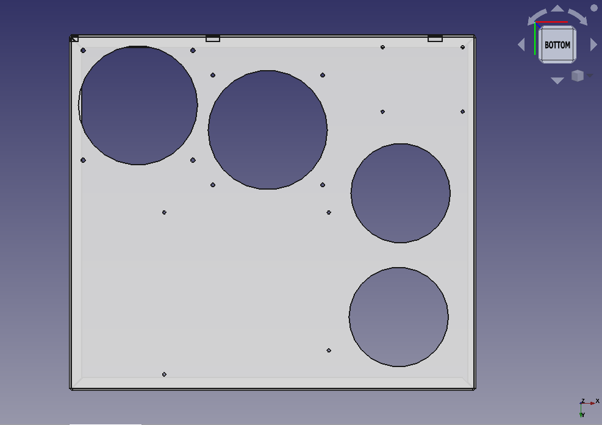
The bottom of the chassis has two big fan holes, one for intake and one for exhaust, as well as two smaller holes for the GPU intake fans. It also has holes for the fan screws, motherboard standoff, and the SSD. It's a good idea to check what the size of each screw is, as you want the hole to be the exact same size as the screw. The hole doesn't need to be threaded! If it's the same size as the screw, the screw will thread itself.
The screw diameters are as follows:
- Motherboard standoffs: 3mm
- Fans: 3.5mm
- SSD: 3mm

The GPU backplate was removed and the output ports + screw holes were measured. I could not find a nice way of having the backplate mounted, so cutting to fit was the next best thing. It does mean that if I need to change the GPU, then the back will need to be redone... But considering how long I kept my laptop around, I probably won't be upgrading any time soon. The size of motherboard backplate is standardized, you can find the ATX standard here (the backplate is on page 16). Just remember to have it 7mm off the ground (1mm for the aluminum thickness, and 6mm for the standoff screw).
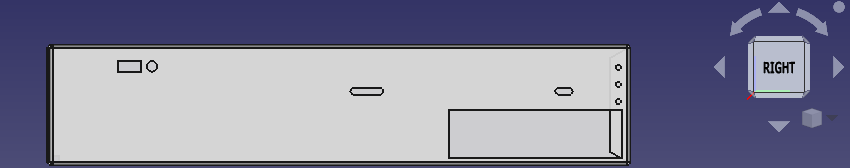
The right side has a hole on the bottom left that corresponds with the vent grill on the case, two holes for mounting the riser card with some screws, and in the floppy drive section on the top right I added a USB and Headphone hole for some side IO. I collect CD's, and while it would be nice to have a CD player, I don't want to perform this cursed mod.

The front has some holes on the left for the front buttons and the green power LED, a vent hole below it, three holes on the bottom for the plastic tabs, and some small holes on the sides to hold the sheet metal together with the help of some tabs. The holes on the left are lower because I was afraid that the plastic that holds the front buttons would get in the way.
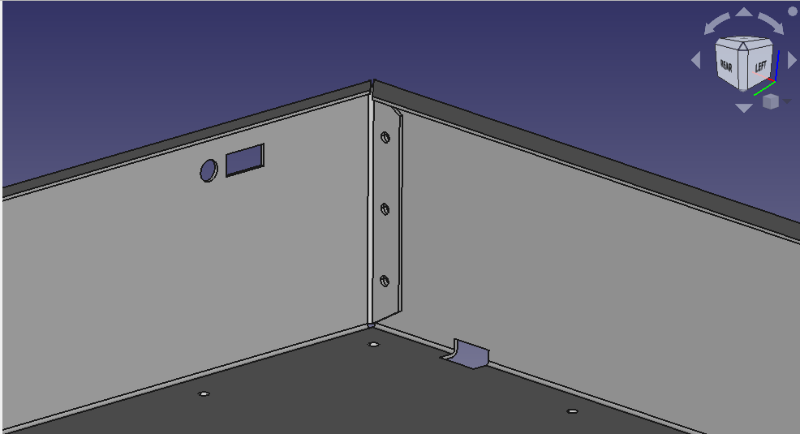
Interior shot of one of the tabs.
In order to keep the box's shape, there needs to be some way to hold the walls in place. What I did was extend out the sides to create the tabs in that picture. The idea was that I would use a pop rivet gun to rivet the tabs, keeping the shape. Because the rivets will stick out a bit, I needed to be careful with the hole placement.

Here's a top down diagram of the walls and their tabs
Since there's that space between the front plastic and the chassis, I had no concerns placing the front tabs. Same goes of the one on the right. The left tab was the problem... I could've had the tab sticking out to the right, but I feared that the 1mm gap between the PSU and the chassis would make it harder to screw in. I kept the tab pointing downwards, but I didn't make rivet holes since rivets would not be possible on that side of the case. Perhaps I could have someone weld the tab to the interior wall instead?
Be careful when making tabs. Remember that the box needs to be bent into shape, so you can't have tabs designed in a way which would make the folding process impossible.
Feeling confident, I decided to make some technical drawings, print them out on paper, cut them out on cardboard, and screw the parts onto them to ensure everything was in place:
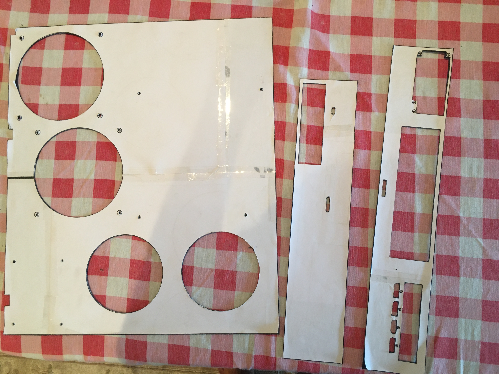 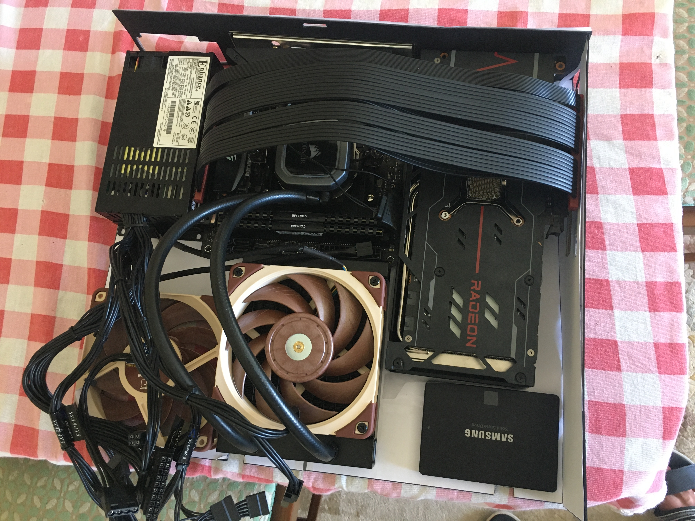
Here I made an annoying discovery: the CPU Cooler is actually slightly larger than the model, so it would make fitting the motherboard impossible. I had to shift it up a bit, being careful not to block the holes where the tabs on the bottom of the case were.
After making the corrections and confirming in another model that everything fit this time, I felt like it was time to move onto the next step.
Purchasing a Ten Thousand Dollar Laser Cutting Machine
Just kidding! My univeristy has a Fab Lab, which is a place that lets you pay an entrance fee to use their tools. But unfortunately, it does not have any sheet metal tools. I decided to take a trip to the Makers in Little Lisbon FabLab and ask for advice. I was recommended a place called NFSLaser.
I originally sent them an STL model of the box before and after folding, but they asked me for PDFs/DXFs. I thought it was like 3D printing, where the model was important, but I guess not. I sent them Technical Drawings, but they complained that the measurements weren't adding up, and they were also obscuring parts of the drawing. One phone call later, it turns out they just needed a 1:1 ratio drawing of just the unfolded box. Not what I was expecting at all, but fair enough.
A few days later, the pickup was ready:
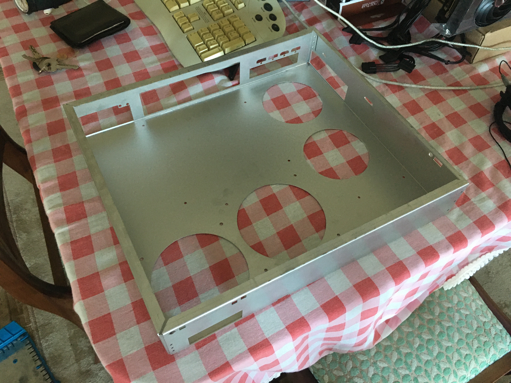
I sure hope it fits... And it does, like a glove!
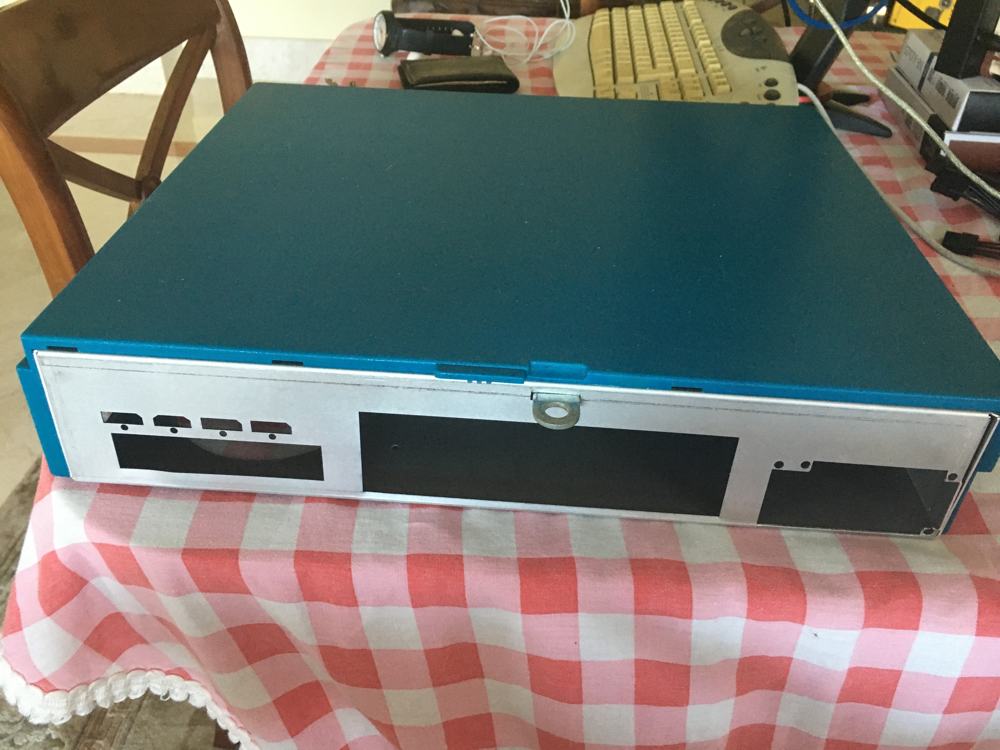
The box is almost perfect, if you look at the bottom left you will notice that one of the PSU holes is cracked. It was my fault for putting them so close to the PSU vent hole.
Chassis Modifications
Despite the nice fit, the chassis wasn't perfect, and this was entirely oversights from my part.
The first main issue was that I could feel the plastic tabs at the front of the case being stressed hard by the chassis. I decided to whip out my dremel (I bought one years ago for Cosplay work) and to grind out the tabs to give the tabs some breathing room.
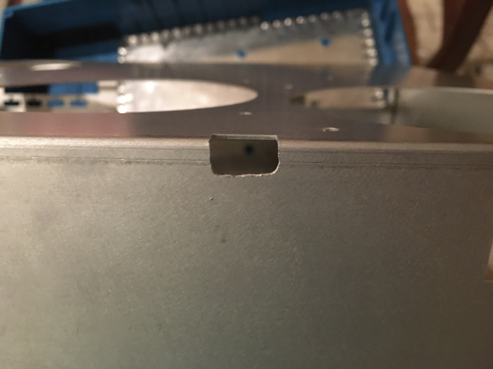
A beautiful straight line
The second issue was that the Indy has a little nudge on the back to keep the chassis in place. I don't need the nudge, and it was actively making removing of the chassis really difficult. The Indy originally has a plastic piece that lets you use your finger strength to pull the chassis apart, but because this design is such a tight fit the extra security isn't needed. So I took the dremel with a cutting disk and did some hand work:
{kind=link}
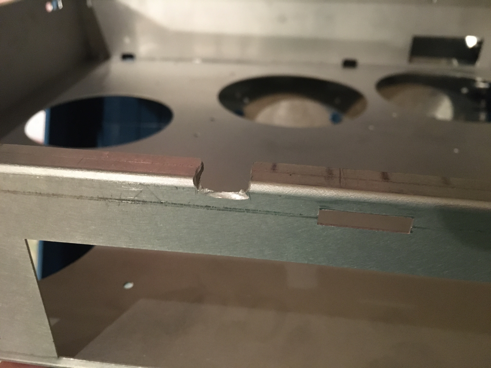
Never have I seen such a steady hand!
While aluminum dust isn't toxic, you should still wear a mask and some goggles. Aluminum dust is highly conductive however, so be sure to give it a good wash and pass with a damp cloth.
Another oversight I ran into was that the rivets on the GPU side were actually hitting the plastic, because it sticks out a bit. Doh! Thankfully you can remove pop rivets with a hammer and a screw driver. No one will ever see the scuffs on the inside of the chassis anyway ^^'
Obviously, the fan holes are a fantastic way to turn the inside of my case into a dust bunny. Aluminum is not magnetic, so I couldn't get those nice magnetic dust filters. I went to the hardware store and bough some wire mesh, which I made some small paper stencils and then transfered over and cut. I originally tried to cut the mesh with the dremel's cutting disk, but it broke three of my disks. Instead, I took a pair of scissors, and with much brute force, I had something I was happy with:

Bent by hand too. This wire mesh was really sharp, managed to cut myself a few times. Should've worn gloves...
The holes were originally made with a drill, but the drill bit either got stuck or would flex the mesh. So instead I took a grindy dremel bit and made the holes very patiently...
Putting everything together
Because I want the front to turn the PC on and off, I put some buttons and an LED on a protoboard and soldered some wires to them.
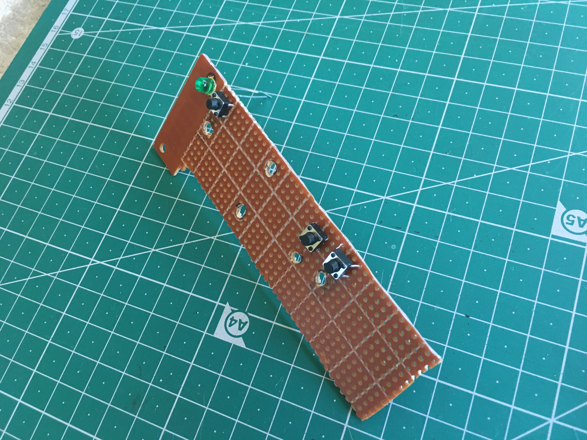
I got some wires with female pin headers to connect to the motherboard I/O pins. The power LED pins on the motherboard draw 5V (I checked with my multimeter), but the LED was rated for 3V, so I soldered two 100ohm resistors in series to step the voltage down. Unfortunately, the local electronics store only had one pair of female pin header wires, so the LED is currently unhooked.
I drilled some holes on the front of the chassis + on the protoboard and screwed it in place.
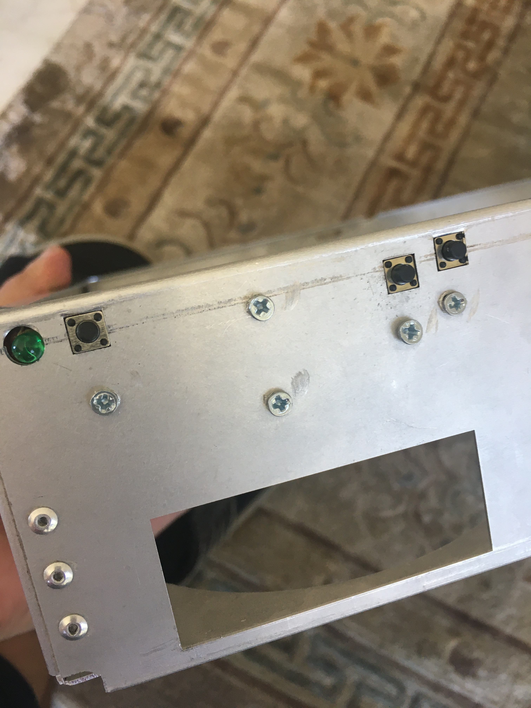
A little scuffed from the drill bit slipping, but again, no one will see it.
The screwheads sticking out isn't a problem because the buttons already stick out, so it will never scratch the case plastic. The volume buttons don't do anything for the time being,
Putting everything together:
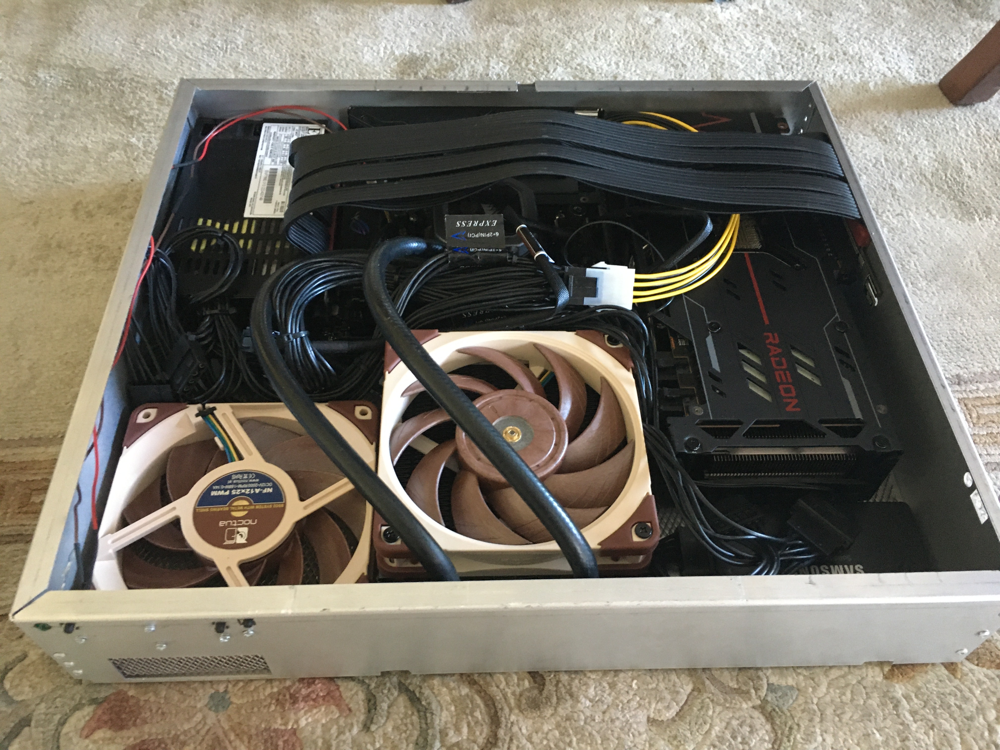
Currently is not cable managed since I need to disassemble it later to solder the LED wires.
Time for the moment of truth...
It works (besides the power LED which isn't hooked up yet).
The Good, the Bad, and the Ugly
Overall, I'm quite happy with the PC. Frankly my only problems are Linux related, that's not a fault of the hardware. Temps under load aren't also amazing, but again that was sort of to be expected. I'm not particularly annoyed with fan noise since headphones are plugged into my ears like umbilical cords, so I can just ramp up the fans harder to compensate.
Design flaws...
- Remember the holes I made to screw in the GPU riser? The right-most one is useless due to it hitting the plastic at the back (aka the same problem as the rivets), the other one is fine.
- The screw holes for the GPU are slightly too big, so a washer needs to be placed to prevent them from going into the case. The washers need to be trimmed or they block the DVI output.
- Due to the lack of rivets on the left side tab, there's a small gap between the two walls. Again, I should look into welding those. Next time, I should have the tabs riveted to the back face (similar to the front face), but just having a section cut out to fit the PSU + GPU.
- The side I/O is a milimeter too much to the bottom, making it useless. I'm not sure where I went wrong in my measurements, but I know I didn't test the side I/O in my cardboard model. Basically I was stupid. I wasn't planning on populating those just yet anyway, but looks like I'll need to do some grinding to fix that...
{kind=link}
The end!
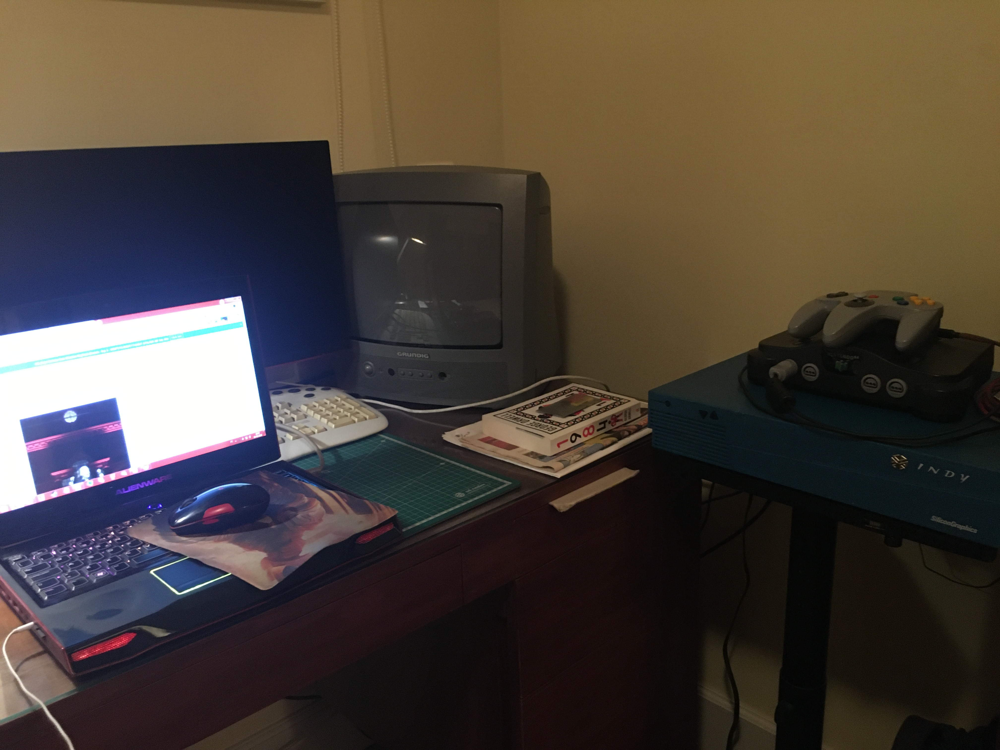
Update 16/09/2022
I have soldered the Power LED to the wires and resistors, and it works now. I had to connect it to the HDD LED cable though, because apparently the POWER LED cable is to tell you that the motherboard is connected to the socket, not that the PC is on. Whoops!
If you want my CAD files, then feel free to grab them from here.
Update 24/09/2024
It's been two years already? Wow.
I intend on writing another article about how the PC has been holding up after all these years, but in the meantime I would like to talk about a change I made to the PC. I actually did this in May, but I only now got around to updating this blog page about it.
As I outlined earlier in the article, the two buttons on the front of the machine aren't doing anything. The two arrow buttons on the front of an actual Indy are volume buttons, and there's actually a small recessed button that works as a reset button. I never really planned on doing anything with the reset button (I don't think I've ever seen a computer with such a button in this day and age), but I definitely did want to do something with the arrows.
So I got my hands on a beetle board, it's so cute:
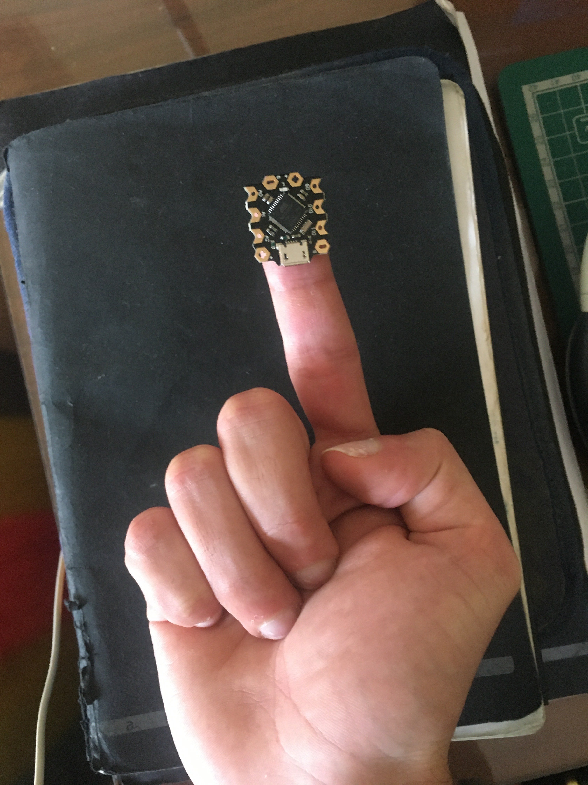
This is basically an Arduino compatible board, which means I can program it to do whatever I want. And since an Arduino is connected via USB, it can emulate a keyboard.
So it's relatively easy. All I have to do is treat one of the GPIO's as an input and to send a keyboard volume key when it detects 5 volts. Now, you still need to go about debouncing the detection, and I went as far as adding the delay you get when you hold down a key. But it was all working quite well:
The motherboard of your PC should have some USB headers on it, as these headers are what give your PC case the ability to have Front I/O for USB. So all I have to do is to solder the buttons to the beetle, plug the beetle into the motherboard's USB header:
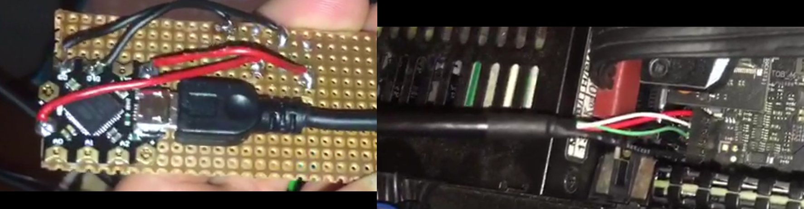
And voila:
The code for this is on GitHub as usual.
Now, this wasn't completely painless. I actually had a bit of trouble with the front I/O due to a mistake I made in this article!
I mentioned that the green LED wasn't working when I connected it to the POWER LED cable, and that I had to hook it to the HDD LED. I wasn't very proud of the solder job I did on the front light and power button, so since I went through the trouble of disassembling the PC to access the front I/O board, I went ahead and resoldered the pieces. However, when I tried hooking them back to the PC, the LED stopped working...
I wasted hours trying to diagnose this and resoldering the I/O. The LED was fine and plugged in the correct orientation, the motherboard was sometimes reading the correct voltage and other times not. Did I fry the motherboard somehow?
No, so actually as it turns out, I had enabled "stealth" mode in the BIOS many years ago (I remember doing this specifically for power consumption reasons), which would disable all LEDs. I had to re-enable to get the LED working again. Why the HDD LED was working all this time is still a mystery to me, but at least now the LED is properly connected to the POWER LED cable, and will turn off when the computer is powered off/sleeping. Just as John Computer intended.